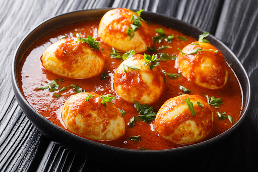

Huevos entomatados
3 Tomates
½ Cebolla
1 Chile verde
1 pizca de Orégano
2 cucharas de Mantequilla
3 Ajos
1 pizca de Sal
½ taza de Agua
Se comienza cortando en trozos pequeños los tomates, la mitad de la cebolla, el chile y los ajos, por separado.
Luego se coloca en una sartén la mantequilla y se agregan los trocitos de cebolla y ajo, sofriendo hasta que estén listos.
Seguidamente se añaden los trozos de tomates y chile verde, y se comienzan a freír todos los picadillos.
Se agrega sal y orégano al gusto para sazonar y se revuelve la mezcla.
A continuación, se agrega media taza de agua a los picadillos para crear una salsa, y se sigue revolviendo.
Se hacen cuatro espacios en la salsa y se colocan los huevos estrellados, dejándolos cocinar por unos 5 minutos.
Se retiran los huevos con una espátula y se sirven calientes, acompañados de unas deliciosas tortillas salvadoreñas.